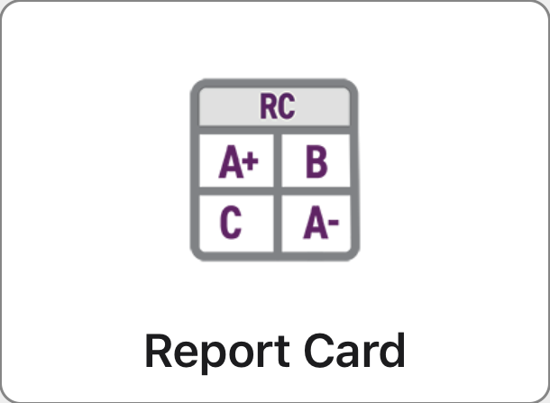

<title>ParentVUE Report Cards</title>
<meta name="claude:viewport-fit-sides" content="cover">
<link rel="preconnect" href="https://fonts.googleapis.com">
<link rel="preconnect" href="https://fonts.gstatic.com" crossorigin>
<link href="https://fonts.googleapis.com/css2?family=Montserrat:wght@600;700&family=Open+Sans:wght@400;600;700&display=swap" rel="stylesheet">
<style>
/* Layout: quiet liquid-glass page over soft brand gradient fields. One sticky glass bar, a glass hero with the notice and the two tiles to look for, one video player with a wide/vertical switch, then two inset step lists. Light only, 4px corners, Oxnard Blue leads, Oxnard Red only on the one filled action. */
:root {
  --bg: #EEF2FA;
  --fg: #0F1013;
  --muted: #454D57;
  --blue: #0033A1;
  --navy: #001F61;
  --red: #E20031;
  --on-red: #FFFFFF;
  --tint: rgba(0, 51, 161, 0.10);
  --tint-strong: rgba(0, 51, 161, 0.16);
  --glass: rgba(255, 255, 255, 0.62);
  --glass-in: rgba(255, 255, 255, 0.80);
  --rim: rgba(255, 255, 255, 0.85);
  --hair: rgba(0, 31, 97, 0.16);
  --hair-soft: rgba(0, 31, 97, 0.08);
  --bar: rgba(238, 242, 250, 0.78);
  --r: 4px;
  --lift: 0 0 0 1px var(--hair-soft), 0 10px 28px -10px rgba(0, 31, 97, 0.22), inset 0 1px 0 var(--rim);
  --font-display: 'Montserrat', Arial, sans-serif;
  --font-body: 'Open Sans', Arial, sans-serif;
  color-scheme: light;
}
* { box-sizing: border-box; }
html { scroll-behavior: smooth; }
body {
  margin: 0; background: var(--bg); color: var(--fg);
  font-family: var(--font-body); font-size: 17px; line-height: 1.6;
}
body::before {
  content: ""; position: fixed; inset: 0; z-index: -1; pointer-events: none;
  background:
    radial-gradient(620px 480px at 4% 2%, rgba(0, 51, 161, 0.22), transparent 70%),
    radial-gradient(640px 520px at 100% 22%, rgba(153, 173, 217, 0.62), transparent 70%),
    radial-gradient(560px 460px at 2% 74%, rgba(153, 173, 217, 0.46), transparent 70%),
    radial-gradient(600px 480px at 74% 104%, rgba(226, 0, 49, 0.10), transparent 70%);
}
body::after {
  content: ""; position: fixed; inset: 0 0 auto; height: env(safe-area-inset-top, 0px);
  z-index: 30; background: var(--bar);
  -webkit-backdrop-filter: blur(18px) saturate(1.4); backdrop-filter: blur(18px) saturate(1.4);
}
a { color: var(--blue); text-decoration: underline; text-underline-offset: 3px; }
p { margin: 0; text-wrap: pretty; }
li span, .tile small { text-wrap: pretty; }
h1, h2, h3 { font-family: var(--font-display); color: var(--navy); margin: 0; text-wrap: balance; }
h1 { font-weight: 700; font-size: clamp(30px, 5.2vw, 48px); line-height: 1.1; letter-spacing: -0.01em; }
h2 { font-weight: 700; font-size: clamp(22px, 3vw, 28px); line-height: 1.2; }
h3 { font-weight: 700; font-size: 19px; line-height: 1.3; }
:focus-visible { outline: 3px solid var(--blue); outline-offset: 2px; }
.wrap {
  max-width: 1040px; margin: 0 auto;
  padding-left: max(16px, env(safe-area-inset-left, 0px));
  padding-right: max(16px, env(safe-area-inset-right, 0px));
}
.glass {
  background: linear-gradient(180deg, rgba(255,255,255,0.74), var(--glass));
  -webkit-backdrop-filter: blur(22px) saturate(1.5); backdrop-filter: blur(22px) saturate(1.5);
  border-radius: var(--r); box-shadow: var(--lift);
}
/* Bar */
.bar {
  position: sticky; top: env(safe-area-inset-top, 0px); z-index: 20;
  background: var(--bar);
  -webkit-backdrop-filter: blur(18px) saturate(1.4); backdrop-filter: blur(18px) saturate(1.4);
  box-shadow: 0 1px 0 var(--hair-soft);
}
.bar .wrap { display: flex; align-items: center; justify-content: space-between; gap: 16px; min-height: 64px; }
.bar img { height: 38px; width: auto; display: block; }
.bar > .wrap > span { font: 600 14px var(--font-display); color: var(--navy); letter-spacing: .02em; }
.lang-wrap { display: inline-flex; align-items: center; gap: 8px; color: var(--navy); }
.lang-wrap svg { width: 24px; height: 24px; flex: none; fill: currentColor; }
.lang { display: inline-flex; padding: 3px; gap: 2px; background: var(--tint); border-radius: var(--r); box-shadow: inset 0 0 0 1px var(--hair-soft); }
.lang button { font: 600 14px var(--font-display); color: var(--navy); background: transparent; border: 0; cursor: pointer; padding: 8px 14px; border-radius: 3px; min-height: 40px; }
.lang button[aria-pressed="true"] { background: #fff; color: var(--blue); box-shadow: 0 1px 2px rgba(0,31,97,.18), 0 0 0 1px var(--hair-soft); }
.nb { white-space: nowrap; }
/* Hero */
.hero-wrap { padding-block: 40px 24px; }
.hero { display: grid; grid-template-columns: minmax(0, 1.25fr) minmax(0, 1fr); gap: 36px; padding: 40px; align-items: center; }
.eyebrow { font: 700 13px var(--font-display); letter-spacing: .1em; text-transform: uppercase; color: var(--blue); margin-bottom: 14px; }
.lead { margin-top: 18px; color: var(--fg); font-size: 18px; max-width: 54ch; }
.lead + .lead { margin-top: 12px; color: var(--muted); font-size: 17px; }
.actions { display: flex; flex-wrap: wrap; gap: 12px 22px; align-items: center; margin-top: 28px; }
.btn {
  display: inline-block; background: var(--red); color: var(--on-red); text-decoration: none;
  font: 700 16px var(--font-display); padding: 14px 24px; border-radius: var(--r); border: 0; cursor: pointer;
  box-shadow: 0 8px 18px -8px rgba(226, 0, 49, 0.55), inset 0 1px 0 rgba(255,255,255,0.28);
}
.btn:hover { background: #B50027; }
.tiles { display: grid; gap: 14px; }
.tiles .label { font: 700 13px var(--font-display); letter-spacing: .08em; text-transform: uppercase; color: var(--navy); }
.tile {
  display: flex; align-items: center; gap: 16px; padding: 12px 16px 12px 12px; background: var(--glass-in);
  border-radius: var(--r); box-shadow: 0 0 0 1px var(--hair-soft), inset 0 1px 0 var(--rim);
}
.tile img { width: 118px; height: auto; display: block; border-radius: var(--r); flex: none; }
.tile b { display: block; font: 700 16px var(--font-display); color: var(--navy); }
.tile small { display: block; color: var(--muted); font-size: 14px; line-height: 1.4; margin-top: 2px; }
/* Video */
section { padding-block: 28px; }
.sec-head { display: flex; flex-wrap: wrap; align-items: end; justify-content: space-between; gap: 14px 24px; margin-bottom: 18px; }
.sec-head p { color: var(--muted); font-size: 15px; margin-top: 6px; max-width: 60ch; }
.player { padding: 14px; display: flex; justify-content: center; }
.player video { display: block; width: 100%; background: #F4F2ED; border-radius: var(--r); }
#vWide { aspect-ratio: 16 / 9; max-width: 960px; }
.player-note { margin-top: 12px; font-size: 14px; color: var(--muted); }
/* Steps */
.options { display: grid; grid-template-columns: repeat(2, minmax(0, 1fr)); gap: 20px; }
.opt { padding: 28px; }
.opt .tag {
  display: inline-block; background: var(--tint); color: var(--blue); font: 700 12px var(--font-display);
  letter-spacing: .1em; text-transform: uppercase; padding: 6px 12px; border-radius: var(--r); margin-bottom: 14px;
}
.opt p.what { color: var(--muted); font-size: 15px; margin-top: 8px; }
.opt ol { list-style: none; counter-reset: s; margin: 20px 0 0; padding: 0; display: grid; gap: 0; background: var(--glass-in); border-radius: var(--r); box-shadow: 0 0 0 1px var(--hair-soft), inset 0 1px 0 var(--rim); overflow: hidden; }
.opt li { counter-increment: s; display: grid; grid-template-columns: 30px minmax(0, 1fr); gap: 12px; padding: 14px 16px; font-size: 16px; }
.opt li + li { border-top: 1px solid var(--hair-soft); }
.opt li::before {
  content: counter(s); width: 28px; height: 28px; border-radius: 50%; display: grid; place-items: center;
  background: var(--blue); color: #fff; font: 700 14px var(--font-display);
}
.opt li strong { color: var(--navy); }
/* Help */
.help { padding: 24px 28px; display: flex; flex-wrap: wrap; gap: 8px 28px; align-items: center; justify-content: space-between; }
.help p { max-width: 62ch; }
.help .q { font: 700 17px var(--font-display); color: var(--navy); }
footer { padding-block: 24px 48px; color: var(--muted); font-size: 14px; }
footer .wrap { display: flex; flex-wrap: wrap; gap: 8px 24px; justify-content: space-between; }
@media (max-width: 820px) {
  .hero { grid-template-columns: minmax(0, 1fr); padding: 26px 22px; gap: 26px; }
  .options { grid-template-columns: minmax(0, 1fr); }
  .bar > .wrap > span { display: none; }
  .bar img { height: 30px; min-width: 0; flex: 0 1 auto; }
  .bar .wrap { gap: 8px; }
  .lang-wrap { gap: 4px; }
  .lang-wrap svg { width: 20px; height: 20px; }
  .lang button { padding: 8px 10px; font-size: 13px; }
  body { font-size: 16px; }
  .lead { font-size: 17px; }
  .opt { padding: 22px; }
}
@media (prefers-reduced-motion: reduce) { html { scroll-behavior: auto; } }
</style>

<header class="bar">
  <div class="wrap">
    
    <span data-t="bar">Parent resources</span>
    <div class="lang-wrap">
      <svg viewBox="0 0 24 24" aria-hidden="true" focusable="false"><path d="M12.87 15.07l-2.54-2.51.03-.03c1.74-1.94 2.98-4.17 3.71-6.53H17V4h-7V2H8v2H1v1.99h11.17C11.5 7.92 10.44 9.75 9 11.35 8.07 10.32 7.3 9.19 6.69 8h-2c.73 1.63 1.73 3.17 2.98 4.56l-5.09 5.02L4 19l5-5 3.11 3.11.76-2.04zM18.5 10h-2L12 22h2l1.12-3h4.75L21 22h2l-4.5-12zm-2.62 7l1.62-4.33L19.12 17h-3.24z"/></svg>
    <div class="lang" role="group" aria-label="Language / Idioma">
      <button type="button" id="lEn" lang="en" aria-pressed="true">English</button>
      <button type="button" id="lEs" lang="es" aria-pressed="false">Español</button>
    </div>
    </div>
  </div>
</header>

<main>
  <div class="wrap hero-wrap">
    <div class="hero glass">
      <div>
        <p class="eyebrow" data-t="eyebrow">Quarter 1 report cards</p>
        <h1 data-t="h1">Find your student’s report card in ParentVUE</h1>
        <p class="lead" data-t="lead1">Report cards will not be mailed home this quarter. Please view your student’s report card in the ParentVUE app.</p>
        <p class="lead" data-t="lead2">It takes about a minute. Watch the short video or follow the steps below.</p>
        <div class="actions">
          <a class="btn" href="#video" data-t="watch">Watch the video</a>
          <a href="#steps" data-t="read">Read the steps</a>
        </div>
      </div>
      <div class="tiles" role="group" data-t-aria="tilesAria" aria-label="The two tiles to look for in ParentVUE">
        <p class="label" data-t="look">Look for these tiles</p>
        <div class="tile">
          
          <div><b>Report Card</b><small data-t="rcSmall">Your student’s current report card, with a printable version.</small></div>
        </div>
        <div class="tile">
          
          <div><b>Documents</b><small data-t="docSmall">Every report card on file, newest first.</small></div>
        </div>
      </div>
    </div>
  </div>

  <section id="video">
    <div class="wrap">
      <div class="sec-head">
        <div>
          <h2 data-t="vH">Watch how to find it</h2>
          <p data-t="vP">The video has no sound. Every step is written below, and the captions on screen match them.</p>
        </div>
      </div>
      <div class="player glass">
        <video id="vWide" controls playsinline preload="metadata" poster="img/poster-wide.jpg" aria-label="How to find your student’s report card in ParentVUE, wide format">
          <source src="videos/parentvue-report-card-wide.mp4" type="video/mp4">
        </video>
      </div>
    </div>
  </section>

  <section id="steps">
    <div class="wrap">
      <div class="sec-head">
        <div>
          <h2 data-t="sH">Two places to find it</h2>
          <p data-t="sP">Both start the same way: open ParentVUE and tap your student.</p>
        </div>
      </div>
      <div class="options">
        <article class="opt glass">
          <span class="tag" data-t="o1">Option 1</span>
          <h3 data-t="o1h">Report Card tile</h3>
          <p class="what" data-t="o1w">See the current report card right away, and open a printable copy.</p>
          <ol>
            <li><span data-t="a1">Open ParentVUE and tap your student.</span></li>
            <li><span data-t="a2">Scroll down to the <strong>Report Card</strong> tile and tap it.</span></li>
            <li><span data-t="a3">Your current digital report card opens.</span></li>
            <li><span data-t="a4">For the printable version, tap <strong>Click here to view report card</strong>.</span></li>
          </ol>
        </article>
        <article class="opt glass">
          <span class="tag" data-t="o2">Option 2</span>
          <h3 data-t="o2h">Documents tile</h3>
          <p class="what" data-t="o2w">See past report cards as well as the current one.</p>
          <ol>
            <li><span data-t="b1">Open ParentVUE and tap your student.</span></li>
            <li><span data-t="b2">Keep scrolling, a little past Report Card, to the <strong>Documents</strong> tile and tap it.</span></li>
            <li><span data-t="b3">Your report card history is listed, with the newest at the top.</span></li>
            <li><span data-t="b4">Tap any report card to open it.</span></li>
          </ol>
        </article>
      </div>
    </div>
  </section>

  <section>
    <div class="wrap">
      <div class="help glass">
        <div>
          <p class="q" data-t="hq">Need help signing in?</p>
          <p data-t="hp">Contact your student’s school office and they will help you get into ParentVUE.</p>
        </div>
      </div>
    </div>
  </section>
</main>

<footer>
  <div class="wrap">
    <span>Oxnard Union High School District</span>
    <span data-t="foot">Report cards will not be mailed this quarter.</span>
  </div>
</footer>

<script>
(function () {
  var NB = function (w) { return '<span class="nb">' + w + '</span>'; };
  var T = {
    en: {
      title: 'ParentVUE Report Cards', bar: 'Parent resources', eyebrow: 'Quarter 1 report cards',
      h1: 'Find your student’s report card in ParentVUE',
      lead1: 'Report cards will not be mailed home this quarter. Please view your student’s report card in the ParentVUE app.',
      lead2: 'It takes about a minute. Watch the short video or follow the steps below.',
      watch: 'Watch the video', read: 'Read the steps', look: 'Look for these tiles',
      tilesAria: 'The two tiles to look for in ParentVUE',
      altRC: 'The Report Card tile in ParentVUE', altDoc: 'The Documents tile in ParentVUE',
      rcSmall: 'Your student’s current report card, with a printable version.', docSmall: 'Every report card on file, newest first.',
      vH: 'Watch how to find it', vP: 'The video has no sound. Every step is written below, and the captions on screen match them.',
      vidWide: 'How to find your student’s report card in ParentVUE, wide format', sH: 'Two places to find it', sP: 'Both start the same way: open ParentVUE and tap your student.',
      o1: 'Option 1', o1h: 'Report Card tile', o1w: 'See the current report card right away, and open a printable copy.',
      a1: 'Open ParentVUE and tap your student.', a2: 'Scroll down to the <strong>Report Card</strong> tile and tap it.',
      a3: 'Your current digital report card opens.', a4: 'For the printable version, tap <strong>Click here to view report card</strong>.',
      o2: 'Option 2', o2h: 'Documents tile', o2w: 'See past report cards as well as the current one.',
      b1: 'Open ParentVUE and tap your student.', b2: 'Keep scrolling, a little past Report Card, to the <strong>Documents</strong> tile and tap it.',
      b3: 'Your report card history is listed, with the newest at the top.', b4: 'Tap any report card to open it.',
      hq: 'Need help signing in?', hp: 'Contact your student’s school office and they will help you get into ParentVUE.',
      foot: 'Report cards will not be mailed this quarter.',
      v: { wide: ['videos/parentvue-report-card-wide.mp4', 'img/poster-wide.jpg'] }
    },
    es: {
      title: 'Boletas de calificaciones en ParentVUE', bar: 'Recursos para padres', eyebrow: 'Boletas de calificaciones del primer trimestre',
      h1: 'Cómo encontrar la boleta de calificaciones de su estudiante en ParentVUE',
      lead1: 'Las boletas de calificaciones no se enviarán por correo postal este trimestre. Por favor, vea la boleta de su estudiante en la aplicación ParentVUE.',
      lead2: 'Solo toma un minuto. Mire el video corto o siga los pasos a continuación.',
      watch: 'Mirar el video', read: 'Leer los pasos', look: 'Busque estas opciones',
      tilesAria: 'Las dos opciones que debe buscar en ParentVUE',
      altRC: 'La opción Report Card en ParentVUE', altDoc: 'La opción Documents en ParentVUE',
      rcSmall: 'La boleta de calificaciones actual de su estudiante, con una versión imprimible.', docSmall: 'Todas las boletas guardadas, la más reciente primero.',
      vH: 'Mire cómo encontrarla', vP: 'El video no tiene sonido. Cada paso está escrito abajo, y los subtítulos en pantalla coinciden con ellos.',
      vidWide: 'Cómo encontrar la boleta de calificaciones de su estudiante en ParentVUE, formato horizontal', sH: 'Dos lugares para encontrarla', sP: 'Los dos comienzan igual: abra ParentVUE y toque el perfil de su estudiante.',
      o1: 'Opción 1', o1h: 'Opción Report Card', o1w: 'Vea la boleta actual de inmediato y abra una copia imprimible.',
      a1: 'Abra ParentVUE y toque el perfil de su estudiante.', a2: 'Desplácese hacia abajo hasta la opción <strong>' + NB('Report Card') + '</strong> y tóquela.',
      a3: 'Aparece la boleta de calificaciones digital actual.', a4: 'Para ver la versión imprimible, toque el enlace <strong>Click here to view report card</strong>.',
      o2: 'Opción 2', o2h: 'Opción Documents', o2w: 'Vea las boletas anteriores y también la actual.',
      b1: 'Abra ParentVUE y toque el perfil de su estudiante.', b2: 'Siga desplazándose, un poco más abajo de ' + NB('Report Card') + ', hasta la opción <strong>Documents</strong> y tóquela.',
      b3: 'Aparece el historial de boletas, con la más reciente arriba.', b4: 'Toque cualquier boleta para abrirla.',
      hq: '¿Necesita ayuda para entrar a ParentVUE?', hp: 'Comuníquese con la oficina de la escuela de su estudiante y le ayudarán a acceder a ParentVUE.',
      foot: 'Las boletas de calificaciones no se enviarán por correo postal este trimestre.',
      v: { wide: ['videos/parentvue-report-card-wide-es.mp4', 'img/poster-wide-es.jpg'] }
    }
  };
  var wide = document.getElementById('vWide');
  var lE = document.getElementById('lEn'), lS = document.getElementById('lEs');
  var lang = 'en';
  function setVideo(v, pair, label) {
    var wasHidden = v.hidden;
    v.pause();
    v.setAttribute('poster', pair[1]);
    v.querySelector('source').setAttribute('src', pair[0]);
    v.setAttribute('aria-label', label);
    if (v.preload !== 'none') v.load();
  }
  function setLang(l, save) {
    lang = l; var d = T[l];
    document.documentElement.lang = l; document.title = d.title;
    var i, el;
    var nodes = document.querySelectorAll('[data-t]');
    for (i = 0; i < nodes.length; i++) { el = nodes[i]; el.innerHTML = d[el.getAttribute('data-t')]; }
    nodes = document.querySelectorAll('[data-t-alt]');
    for (i = 0; i < nodes.length; i++) { el = nodes[i]; el.setAttribute('alt', d[el.getAttribute('data-t-alt')]); }
    nodes = document.querySelectorAll('[data-t-aria]');
    for (i = 0; i < nodes.length; i++) { el = nodes[i]; el.setAttribute('aria-label', d[el.getAttribute('data-t-aria')]); }
    setVideo(wide, d.v.wide, d.vidWide);
    lE.setAttribute('aria-pressed', String(l === 'en')); lS.setAttribute('aria-pressed', String(l === 'es'));
    if (save) { try { localStorage.setItem('ouhsd-lang', l); } catch (e) {} }
  }
  lE.addEventListener('click', function () { setLang('en', true); });
  lS.addEventListener('click', function () { setLang('es', true); });
  var pick = null;
  try { pick = localStorage.getItem('ouhsd-lang'); } catch (e) {}
  var q = /[?&]lang=(en|es)/.exec(location.search);
  if (q) pick = q[1];
  if (!pick && /^es/i.test(navigator.language || '')) pick = 'es';
  if (pick === 'es') setLang('es', false);
})();
</script>
